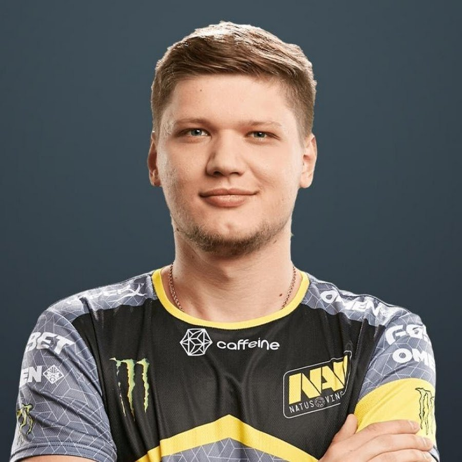

Aleksandr «s1mple» Kostyliev
Александр начал путь в CS:GO в 2013 году. Стартовал в составе LAN DODGERS, но не проявил себя. Затем безрезультатно сотрудничал с Courage Gaming, Hashtag и Amazing Gaming, в сентябре 2014-го был принят в HellRaisers. Вместе с коллективом он выступил на DreamHack Winter 2014, но не поднялся выше 5-8 места. В 2015-м s1mple работал на FlipSid3 Tactics, в июле уволился и планировал прервать карьеру. Затем представлял Evolution и Worst Players, играл в качестве стендина за HR и FlipSid3. В январе 2016-го встал под знамя Team Liquid, вышел в финал ESL One: Cologne 2016. Именно игра Александра во многом помогла коллективу занять столь высокое место. В августе 2016-го s1mple устроился в Natus Vincere. Вместе с командой он завоевал победу на CS:GO Asia Championships 2018, стал серебряным призером FACEIT Major: London 2018, выиграл StarSeries & i-League CS:GO Season 7 и Intel Extreme Masters XIV - World Championship. В 2021-м пятерка покорила BLAST Premier: Global Final 2020, Intel Extreme Masters XVI - Cologne, PGL Major Stockholm 2021 и BLAST Premier: World Final 2021. Ребята также получили 1 миллион долларов как победители третьего сезона Intel Grand Slam. Александр пользуется непререкаемым авторитетом в CS:GO, считается одним из сильнейших игроков в дисциплине. Он 19 раз становился MVP крупных турниров, портал HLTV признал его лучшим игроком в 2018 и 2021 году, разместил на второй строчке в 2019 и 2020-м. Также s1mple установил ряд мировых рекордов: он заработал наибольшее количество наград MVP, оставив позади прежнего чемпиона - Николая « dev1ce » Ридца. Александр заработал наибольшее количество MVP за 1 год: в 2021-м он был признан "Самым ценным игроком" 8 раз. Украинский киберспортсмен установил мировой рекорд по количеству эйсов за 1 раунд: на турнире IEM Cologne 2021 он 4 раза убил пятерых игроков команды противника на первой карте противостояния Natus Vincere и G2 Esports.